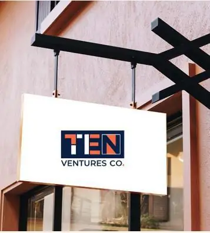
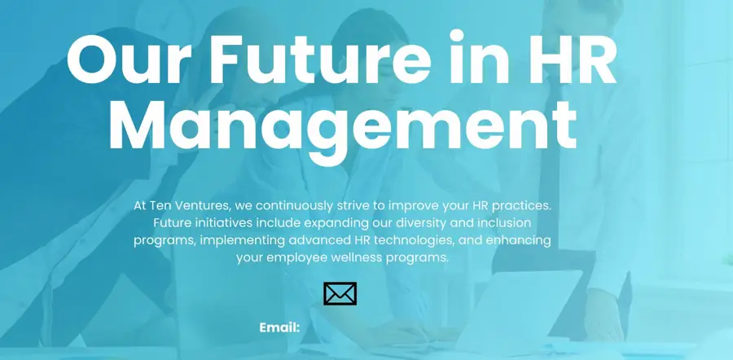
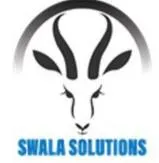
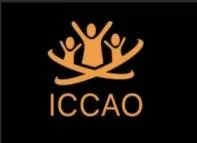

Your People, Our Priority.

At Ten Ventures we are committed to being people and results-oriented, ensuring that every solution we deliver creates tangible impact. Beyond recruitment and advisory services, we specialize in training programs, corporate events, team-building activities. We also provide expert support in disciplinary case management, helping organizations navigate challenging situations with professionalism and care.
Guided by our philosophy, “Your People, Our Priority,” we focus on building stronger teams and fostering meaningful connections that lead to long-term success. Let us transform your HR challenges into exceptional outcomes.
Our selection process includes multiple rounds of fit evaluations to ensure we hire candidates who align with your values and objectives. Our recruitment process focuses on identifying and attracting the best talent.
We use a mix of online job portals, social media, and our self-made database, interviews, skills assessment and cultural awareness.
Other than recruitment and sourcing, we believe in the continuous development of our employees. Ten Ventures offers various training programs, workshops, and e-learning courses to enhance skills and knowledge.
We encourage employees to pursue professional development opportunities to foster their career growth and ensure they remain competitive in their fields.
Ten Ventures, we turn teams into tribes!
Our fun, high-energy team building experiences spark connection, trust, and collaboration.
From creative challenges to strategic games, we help teams break silos and build bonds.
Whether it’s laughter or leadership growth, we’ve got you covered. Let’s make teamwork the best part of your workplace!
At Ten Ventures, we prioritize creating safe and healthy work environments through Health and Safety Awareness Sessions tailored to organizational needs.
We equip your employees with essential knowledge on workplace hazards, preventive measures, and emergency response protocols.
We help businesses minimize risks, ensure compliance with regulatory standards, and enhance employee well-being. Our interactive approach includes practical demonstrations, scenario-based training, and tools for effective risk management.
At Ten Ventures, safety isn’t just a requirement, it’s a shared responsibility and commitment to excellence.
Employee engagement is a key priority at Ten Ventures.
We provide this service where we conduct regular surveys, organize team-building activities, and offer various employee recognition programs.
We at Ten Ventures support your compensation and benefits package to attract and retain top talent.
This includes assisting companies in setting up competitive salary, bonuses, health insurance, retirement plans, and other perks. Our aim is to help companies provide rewards that recognize the contributions of their employees and ensure their well-being.
Maintaining positive employee relations is essential for a harmonious workplace. We help companies build and have an open-door policy, regular communication channels, and conflict resolution mechanisms in place.
We help your team to address employee concerns and foster a culture of mutual respect and collaboration.
At Ten Ventures, we provide tailored legal advisory services to support startups, SMEs, and growing enterprises in navigating regulatory environments.
Our team ensures compliance, mitigates risk, and drafts critical documents including contracts, MOUs, and partnership agreements.
We bridge innovation and legal precision to safeguard your business at every stage.

At Ten Ventures, we continuously strive to improve your HR practices. Future initiatives include expanding our diversity and inclusion programs, implementing advanced HR technologies, and enhancing your employee wellness programs.


Founder, Ten Ventures
Neema Mungure is a dynamic HR and Legal Executive with over 15 years of leadership experience across manufacturing, mining, and corporate sectors. She is renowned for her expertise in Training, HR strategy, legal compliance, corporate governance, and workforce development, consistently driving business sustainability through talent optimization and risk management.
A passionate advocate for training and development, Neema specializes in designing and implementing impactful programs that enhance leadership capabilities, technical skills, and workforce productivity. As a Certified Trainer of Trainers (TOT), she has dedicated her career to empowering individuals and organizations by cultivating talent pipelines, promoting succession planning, and fostering a culture of continuous learning.
As the founder of Ten Ventures, Neema leverages her extensive background in corporate legal drafting, industrial relations, and HR digital transformation to drive meaningful collaborations and innovative ventures. She combines her legal acumen with a people-first approach, successfully navigating complex contract negotiations, litigation cases, and compliance advisory roles to protect organizational interests and build harmonious workplace environments.
Neema is an accomplished scholar, holding an LL.M in International Human Rights Law from Tumaini University, and a recognized thought leader in trade policy and governance. Fluent in English and Swahili, Neema embodies a global perspective that fuels her vision for impactful, sustainable ventures.
neema@tensventures.com · +255 784 536965
Get in touchView careers